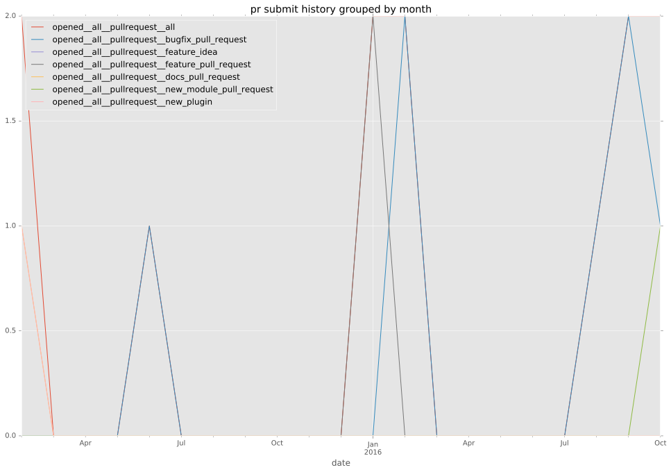
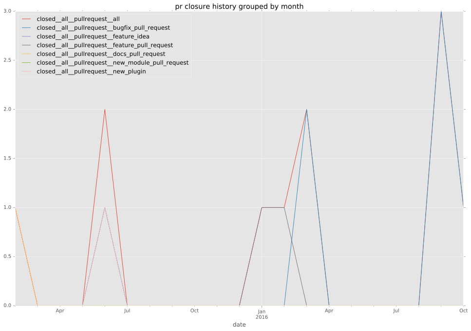

authors
- privateip
maintainers
- privateip
- gundalow
contributors
- privateip : 60 commits
- gundalow : 8 commits
- keinohguchi : 2 commits
- Qalthos : 2 commits
- wenottingham : 1 commits
- bcoca : 1 commits
total issue counts
feature pull request: 1
pullrequest: 10
docs pull request: 2
bugfix pull request: 7
feature idea: 1
issue: 3
bug report: 2
issue history

pullrequest history


days open by issue type
bugfix pull request
count: 13
std: 11.0064083897
min: 0
max: 33
median: 9.0
mean: 8.84615384615
all
count: 22
std: 34.9440183091
min: 0
max: 162
median: 9.0
mean: 17.6818181818
pullrequest
count: 0
std: nan
min: nan
max: nan
median: nan
mean: nan
docs pull request
count: 4
std: 1.73205080757
min: 0
max: 3
median: 1.5
mean: 1.5
feature pull request
count: 2
std: 0.0
min: 15
max: 15
median: 15.0
mean: 15.0
feature idea
count: 1
std: nan
min: 162
max: 162
median: 162.0
mean: 162.0
issue
count: 0
std: nan
min: nan
max: nan
median: nan
mean: nan
bug report
count: 2
std: 21.2132034356
min: 23
max: 53
median: 38.0
mean: 38.0
closures grouped by total days open